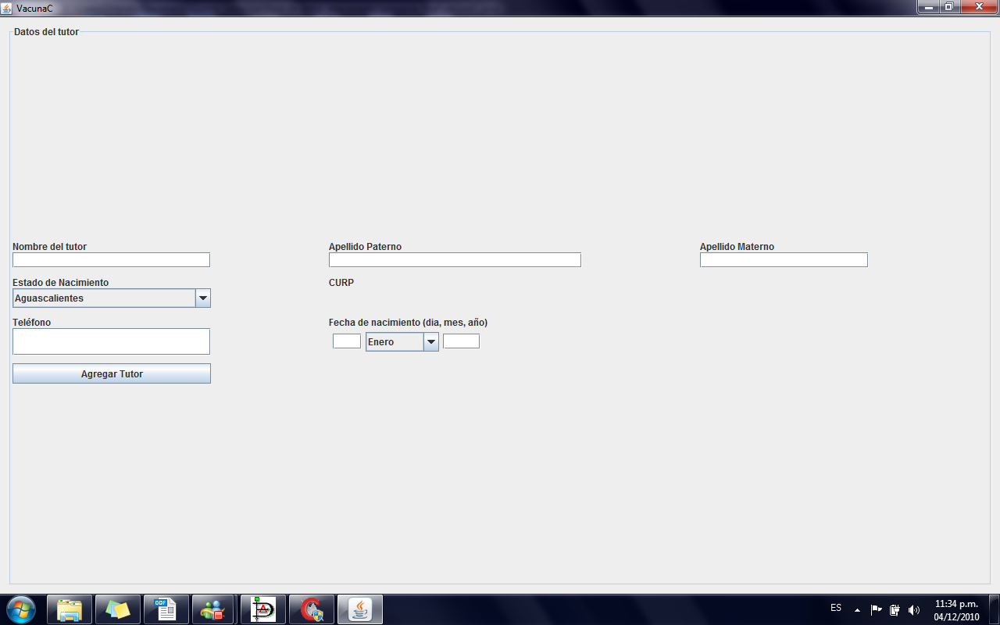
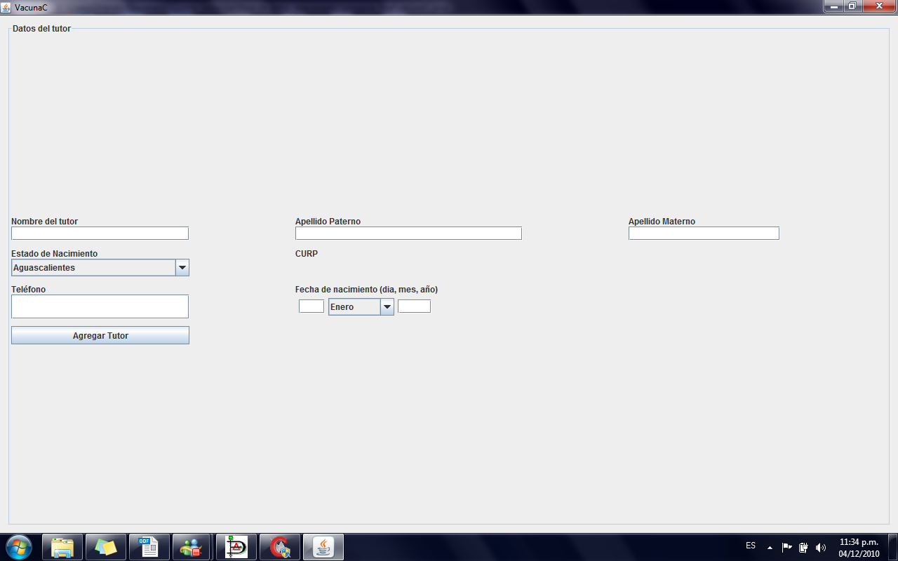
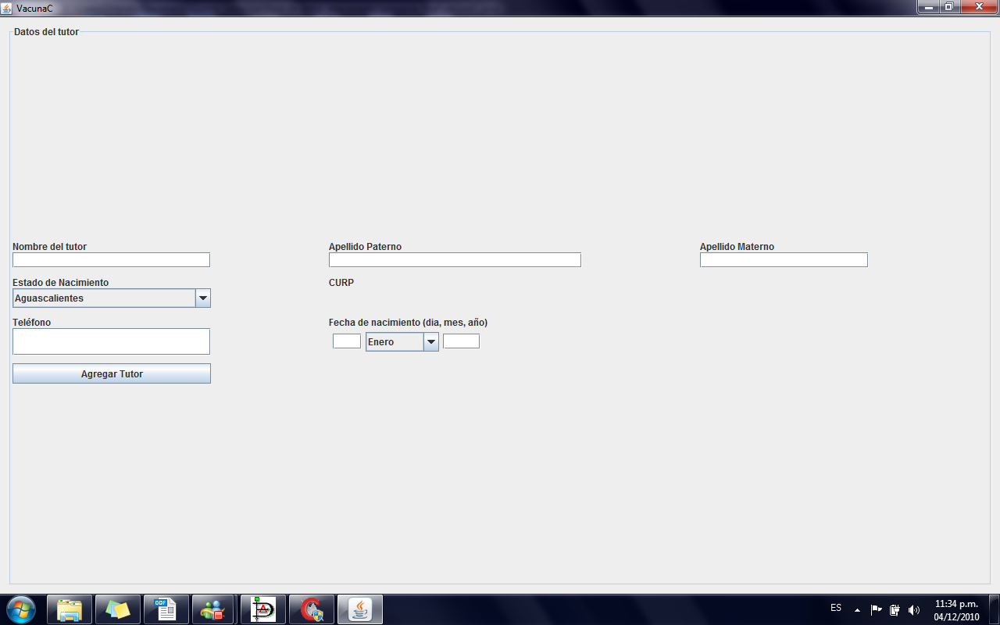

This project is a database for information about vaccines and patients.
This was a solo project. I was in charge of designing the data base, designing and create the user interface in java, and to create the bridge between the java code and MySQL for the data base.
Technologies:
